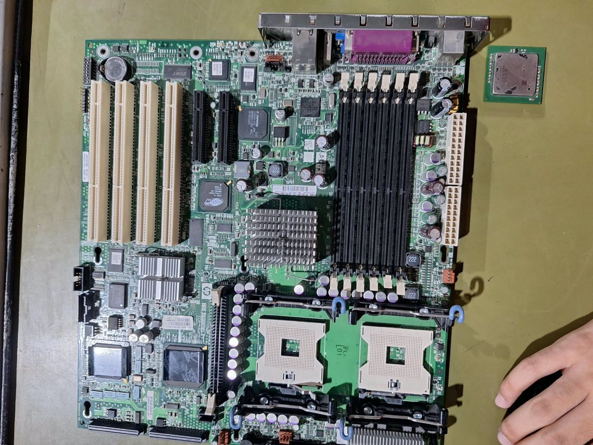
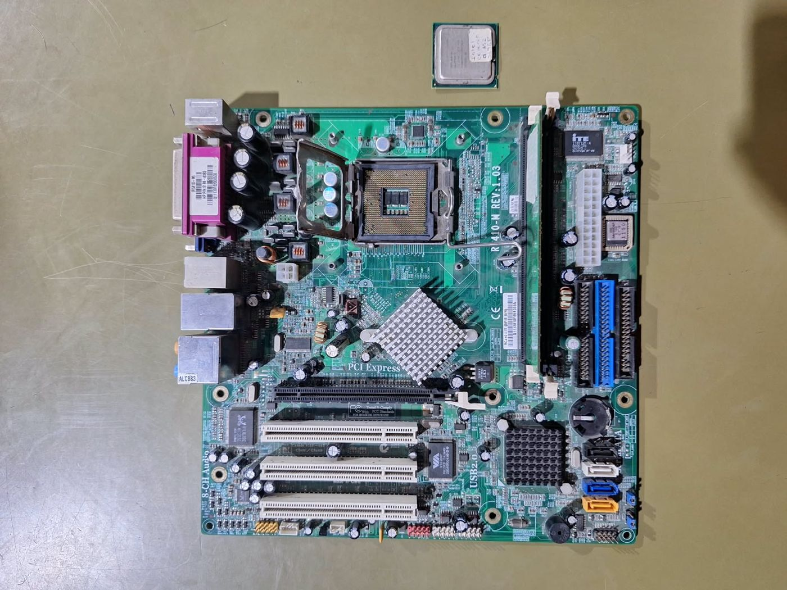
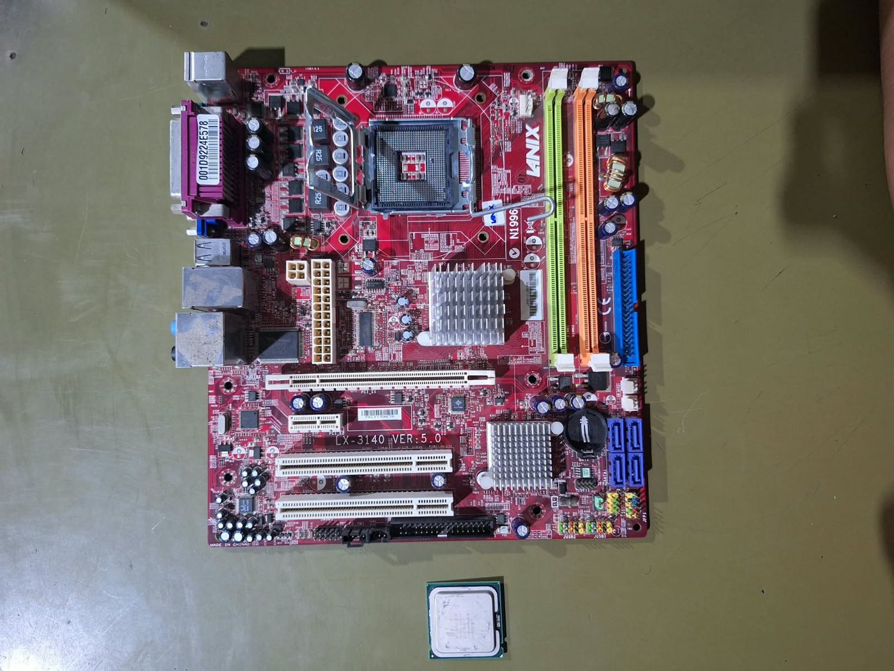
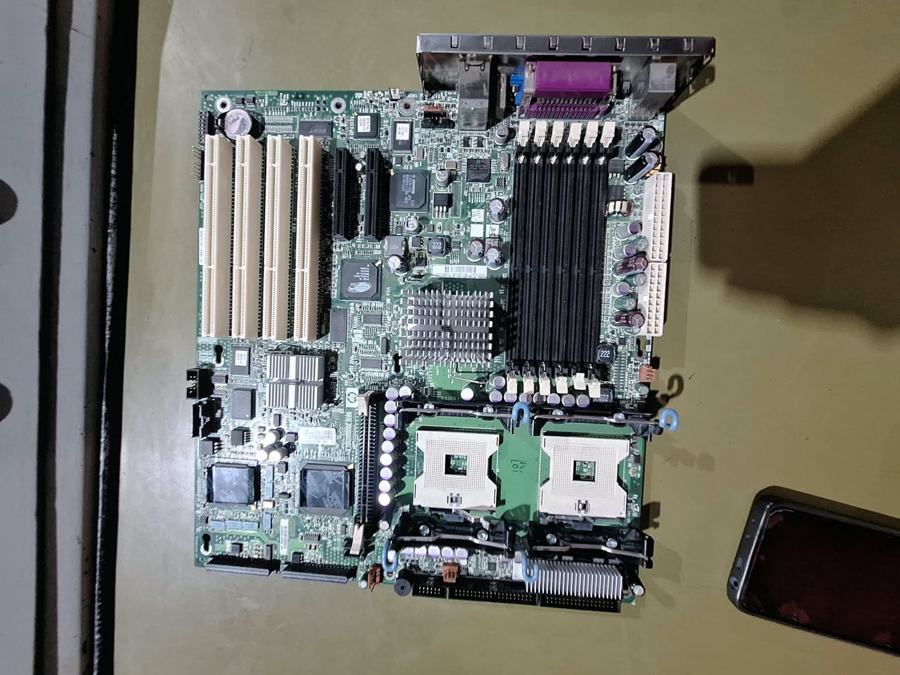
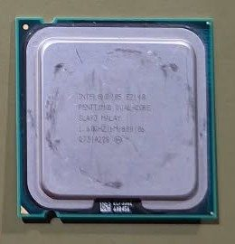
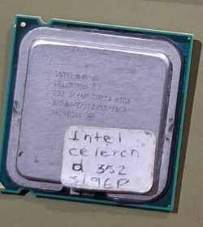
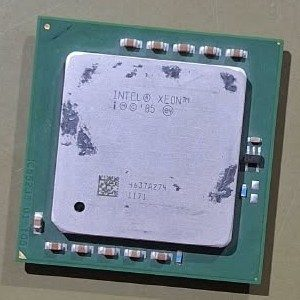

Arquitectura de Computadoras
Todo el temario de la materia en un solo lugar: las cuatro unidades con las exposiciones de cada equipo, las prácticas de laboratorio con placas madre y procesadores reales, y las tareas de investigación, diseño y cotización de equipos.

Temario
Arquitecturas de cómputo
Von Neumann y Harvard, segmentación, multiprocesamiento, CPU, ALU, registros, memoria, E/S, buses e interrupciones.
Unidad 2Estructura y funcionamiento de la CPU
Organización del procesador, registros, ciclo de instrucción, segmentación, ISA y modos de direccionamiento.
Unidad 3Selección de componentes
Chipset, controladores de bus, interrupciones, DMA, temporización, video, aplicaciones y ambientes de servicio.
Unidad 4Procesamiento paralelo
Amdahl y Gustafson, taxonomía de Flynn, multiprocesadores, coherencia de caché y redes de interconexión.
Trabajo práctico
Prácticas 1 y 2
Tres placas madre (dos de escritorio LGA 775 y una de servidor) y tres procesadores Intel identificados por su encapsulado.
5 tareasProcesadores, RAM, gamas, diseño y cotización
De investigar 20 procesadores a cotizar 6 equipos completos en Saltillo y por Internet.
6 fotosGalería del laboratorio
Fotografías tomadas durante las prácticas.
PDFDocumentos y bibliografía
Reportes, tareas y presentaciones para descargar, y las fuentes consultadas.
Unidad 1
Arquitecturas de cómputo
Cómo se organizan y comunican los componentes de una computadora para procesar información, desde los modelos clásicos hasta el análisis de cada componente.
1.1 Modelos de arquitecturas de cómputo
Clásicas: Von Neumann
Datos e instrucciones comparten una misma memoria (programa almacenado). Componentes: CPU, memoria, entrada, salida y buses.
Ventaja: estructura sencilla y flexible. Desventaja: el acceso compartido crea un cuello de botella.
Clásicas: Harvard
Usa memorias y buses independientes para instrucciones y para datos, así que el procesador puede acceder a ambos al mismo tiempo.
Ventaja: mejor rendimiento por accesos simultáneos. Desventaja: diseño y administración más complejos.
Segmentadas (pipeline)
Dividen la ejecución en etapas; mientras una instrucción está en una etapa, otra avanza en la siguiente.
Más rendimiento, pero diseño más complejo y riesgos (conflictos) entre instrucciones.
Multiprocesamiento
Dos o más procesadores trabajan de forma simultánea o paralela. Más capacidad y disponibilidad, a cambio de mayor costo y complejidad; no todas las aplicaciones aprovechan varios procesadores.
1.2.1 Arquitecturas: CPU, ALU, registros y buses
Unidad Central de Procesamiento
“El cerebro de la computadora”: ejecuta instrucciones, realiza operaciones, controla procesos, trabaja con la memoria y se comunica por buses. Sus partes: unidad de control, ALU, registros, reloj y buses internos.
ALU
Realiza operaciones aritméticas (suma, resta, multiplicación, división) y lógicas (AND, OR, NOT) además de comparaciones, por ejemplo 10 > 5 → verdadero.
Registros
Pequeñas áreas de muy alta velocidad dentro del procesador. Evitan ir a la RAM por cada dato.
- PC: dirección de la siguiente instrucción.
- IR: instrucción en proceso.
- Propósito general, estado y direcciones.
Buses
Para leer un dato de memoria, la CPU usa los tres a la vez:
- Direcciones: “quiero el dato de esta dirección”.
- Control: “es una lectura”.
- Datos: “aquí está el dato”.
1.2.2 Memoria
Jerarquía de memoria
De más rápida y pequeña (arriba) a más lenta y grande (abajo).
Manejo de memoria
El sistema operativo asigna, controla, protege y libera memoria. Distingue memoria física (real) y lógica (la que ve cada programa); la virtual usa el disco como apoyo.
- Paginación: páginas de tamaño fijo en marcos.
- Segmentación: partes lógicas (código, datos, pila, heap).
- Fragmentación: interna o externa.
Memoria principal
Formada por la RAM: guarda los programas en ejecución, es mucho más rápida que el almacenamiento y pierde su contenido al apagar el equipo.
Memoria caché
Memoria muy rápida junto al procesador. L1 es la más rápida y pequeña, L2 más grande y L3 compartida entre núcleos. Si el dato está, hay acierto; si no, se busca en la RAM.
1.2.3 Manejo de la entrada/salida
Módulos de E/S
Comunican al procesador con periféricos como teclado, mouse, impresora, disco o monitor.
E/S programada
La CPU hace todo: inicia la operación, revisa sin parar el estado del dispositivo y mueve cada dato.
Por interrupciones
La CPU sigue con otras tareas y el dispositivo avisa cuando termina; se evita el sondeo (polling).
Acceso directo a memoria (DMA)
Un controlador copia bloques entre el dispositivo y la memoria sin ocupar a la CPU. Lo usan discos, tarjetas gráficas y de sonido.
Canales y procesadores de E/S
Procesadores dedicados que ejecutan sus propias órdenes de E/S y liberan aún más a la CPU.
1.2.4 Buses
Tipos
- Datos: transporta la información; su ancho (8, 16, 32, 64 bits) define cuánto mueve a la vez.
- Direcciones: indica dónde leer o escribir; su tamaño fija la memoria direccionable.
- Control: señales de lectura, escritura e interrupción.
Estructura
Conjunto de líneas de datos, direcciones y control. El ancho es la cantidad de bits que viajan al mismo tiempo: un bus de 32 bits transporta 32 bits a la vez.
Jerarquías
Se organizan por velocidad: bus principal (CPU, caché, memoria), bus de expansión (tarjetas) y bus de E/S (teclado, mouse, USB).
1.2.5 Interrupciones
Señales que avisan al procesador de un evento: la CPU detiene lo que hace, atiende la solicitud y luego continúa.
Exposición de la Unidad 1
Unidad 2 · exposición de mi equipo
Estructura y funcionamiento de la CPU
2.1 Organización del procesador
El procesador combina una unidad de control que dirige la ejecución, una ALU que calcula, un banco de registros para los datos inmediatos y los buses internos que los comunican, todo sincronizado por el reloj.
Organización de la segmentación
Cinco instrucciones en un pipeline de 5 etapas: en el ciclo 5 todas las etapas trabajan a la vez.
2.2 Estructura de registros
Los registros son unidades de almacenamiento de alta velocidad dentro de la CPU; guardan datos, instrucciones y direcciones para reducir accesos a la RAM.
Visibles para el usuario
El programador los usa directamente con instrucciones: datos temporales, direcciones y resultados.
De control y estado
- PC: dirección de la siguiente instrucción.
- IR: instrucción actual.
- MAR / MBR: dirección y dato de memoria.
- Banderas: cero, signo, acarreo, desbordamiento.
Ejemplos reales
x86: EAX, EBX, ECX, EDX (propósito general), EIP (contador de programa) y EFLAGS.
ARM: R0–R15, con R15 como PC, y el registro de estado CPSR.
2.3 El ciclo de instrucción
Ciclo básico
El PC apunta a la instrucción, se copia al IR, la unidad de control la interpreta y la ALU la ejecuta.
Segmentación de instrucciones
Cinco etapas (IF, ID, EX, MEM, WB) que se solapan, como una línea de producción. Los riesgos de datos, de control y estructurales pueden detenerla.
Conjunto de instrucciones (ISA)
Lo que el procesador sabe hacer: transferencia de datos, aritméticas, lógicas y de control de flujo. Filosofías CISC (x86) y RISC (ARM).
| 2.3.4 Modo de direccionamiento | Dónde está el operando | Ejemplo |
|---|---|---|
| Inmediato | En la misma instrucción | MOV AX, 5 |
| Directo | En la dirección de memoria indicada | MOV AX, [1000h] |
| Indirecto | La memoria guarda la dirección del operando | [[1000h]] |
| Registro | En un registro | MOV AX, BX |
| Indirecto por registro | El registro guarda la dirección | MOV AX, [BX] |
| Indexado | Dirección base + índice | MOV AX, [SI+10] |
| Base + desplazamiento | Registro base + constante | MOV AX, [BP+4] |
| Relativo | Relativo al contador de programa | JMP etiqueta |
2.4 Casos de estudio de CPU reales
Intel 8086
Origen de la arquitectura x86 (1978): 16 bits, registros AX–DX y segmentación de memoria.
Intel Core
x86 de alto rendimiento con núcleos de rendimiento y eficiencia, Hyper-Threading y caché de varios niveles.
AMD Ryzen
Arquitectura Zen con diseño de chiplets, SMT y gran caché L3 (3D V-Cache).
ARM Cortex
Filosofía RISC y bajo consumo: domina celulares y sistemas embebidos.
Apple M1
SoC ARM con CPU, GPU y memoria unificada en un mismo paquete.
Exposición de la Unidad 2
Unidad 3
Selección de componentes para ensamble de equipos
3.1 Chipset
El centro de comunicaciones de la placa base: organiza, prioriza y encamina los datos entre el procesador, la RAM, el almacenamiento, el video y los puertos. Si la CPU es el cerebro, el chipset es el sistema nervioso; además define qué procesadores y memorias son compatibles.
Esquema tradicional
Puente norte: CPU con RAM y video (alta velocidad).
Puente sur: discos, USB, audio, red y BIOS.
Así son las placas LGA 775 de la práctica 1.
Esquema moderno
El puente norte se integra en la CPU (controlador DDR y líneas PCIe). El puente sur evoluciona al PCH (Intel) o FCH (AMD), unido por enlaces DMI o UMI.
CPU
Usa el chipset como puente. Conceptos clave: núcleos e hilos (SMT), frecuencia en GHz e IPC; caché L1, L2 y L3.
Controlador de bus
Organiza el tráfico: arbitraje, control de acceso, sincronización y traducción entre buses. Maestro y esclavo; arbitraje en cadena, por consulta o por petición independiente. Ancho de banda = ancho × frecuencia.
Puertos de E/S
Serie (USB, Ethernet) o paralelos; mapeados en memoria (MMIO) o en un espacio de E/S aparte.
Controlador de interrupciones
Recibe las peticiones de los módulos de E/S, aplica prioridades y avisa al procesador por una sola línea.
Controlador DMA
El periférico pide el bus, la CPU lo cede, el DMA copia a la RAM y al final avisa con una IRQ.
Temporización
Genera el reloj: onda cuadrada que marca el ritmo. A 1 GHz cada ciclo dura 1 ns; más frecuencia implica más calor y consumo.
Circuitos de control
Registros de estado, control y datos y lógica de decodificación; operan por E/S programada, interrupciones o DMA.
Controles de video
Convierten datos digitales en imagen para la pantalla; usan VRAM y una GPU especializada.
3.2 Aplicaciones
Cómo se elige y optimiza el hardware para cada tarea: potencia, ancho de banda y capacidad de E/S según el software.
Entrada / salida
Entrada (teclado, mouse, micrófono, cámara), salida (monitor, bocinas, impresora) y mixtos (pantalla táctil, disco externo), conectados por USB, HDMI, Ethernet o Bluetooth.
Almacenamiento
Jerarquía de registros, caché SRAM, RAM DRAM y almacenamiento masivo (SSD NVMe/SATA, HDD). Se apoya en el principio de localidad y en DMA.
Fuentes de alimentación
Lineales: transformador, rectificador, filtro y regulador; baratas pero menos eficientes. Conmutadas: más pequeñas, eficientes y frías; las que usan las PC.
3.3 Ambientes de servicio
Infraestructuras de hardware, servidores, redes y almacenamiento que deben estar disponibles, crecer con los usuarios y proteger la información.
Negocios
PCs y laptops, servidores, red, punto de venta (TPV), ERP y respaldos. Ejemplo: al vender en caja, el servidor descuenta el inventario automáticamente.
Industria
Diseñadores sin fábrica (Nvidia, AMD, Apple, Qualcomm), fundidoras (TSMC, Samsung, Intel) y EDA. Arquitecturas x86, ARM y RISC-V; aceleradores de IA.
Comercio electrónico
Compraventa por Internet: tiendas en línea, plataformas colaborativas y comercio social, con centros de datos para millones de visitas.
Exposición de la Unidad 3
Unidad 4
Procesamiento paralelo
4.1 Aspectos básicos de la computación paralela
Usar varios recursos de cómputo a la vez: el problema se divide en tareas, cada una corre en un procesador y al final se combinan los resultados. Desde ~2005 subir los GHz chocó con el límite térmico, así que la industria pasó a poner más núcleos.
Métricas
Aceleración S = T₁ / Tₚ · Eficiencia E = S / p · Costo C = p · Tₚ.
Ej.: 120 s en 1 núcleo y 20 s en 8 → S = 6, E = 75 %.
Ley de Gustafson
S = p − α(p − 1). Si el problema crece con los procesadores, la aceleración también: con α = 5 % y 100 procesadores, S ≈ 95.
Niveles de paralelismo
De bit, de instrucción (pipeline, superescalar), de datos (SIMD, GPU) y de tareas o hilos (multinúcleo, clústeres).
Ley de Amdahl en vivo
S(p) = 1 / [(1 − f) + f / p]. La parte secuencial limita todo: aunque haya infinitos procesadores, el máximo es 1 / (1 − f).
Eficiencia 40 % · Máximo posible 10×
4.2 Tipos de computación paralela
Multinúcleo, multiprocesador simétrico (SMP), clústeres, procesamiento masivamente paralelo (MPP), grid y nube, y aceleradores (GPU, TPU, FPGA).
| Taxonomía de Flynn (1966) | Instrucciones · datos | Ejemplos |
|---|---|---|
| SISD | 1 · 1 | Von Neumann clásico, Intel 8086 |
| SIMD | 1 · muchos | Procesadores vectoriales, SSE/AVX, GPU |
| MISD | muchas · 1 | Sistemas redundantes tolerantes a fallos |
| MIMD | muchas · muchos | Multinúcleos y clústeres (la más común) |
MIMD se divide en multiprocesadores (memoria compartida: UMA, NUMA, COMA) y multicomputadoras (memoria distribuida: MPP, clústeres). Modelos de programación SPMD y MPMD.
4.3 Multiprocesadores y redes dinámicas
Memoria compartida
Varios procesadores con un solo espacio de direcciones y un solo sistema operativo; se programan con hilos (Pthreads, OpenMP).
Coherencia de caché
Si P1 escribe X = 7 y P2 conserva X = 5, los datos quedan inconsistentes. Se resuelve por snooping (pocos núcleos) o directorio (cientos), con el protocolo MESI: Modificado, Exclusivo, Compartido, Inválido.
Sincronización
Condiciones de carrera (contador++ en dos hilos); se controlan con candados, instrucciones atómicas, semáforos y barreras.
| Red dinámica | Costo | Latencia | Bloqueo |
|---|---|---|---|
| Bus compartido | O(N) | Constante | Sí, una transferencia a la vez |
| Multietapa (Omega) | O(N log N) | O(log N) | Parcial |
| Crossbar | O(N²) | Constante | No |
4.4 – 4.5 Multicomputadoras, redes estáticas y casos de estudio
Multicomputadoras
Cada nodo tiene su propia memoria y se comunican por paso de mensajes (MPI). Escalan a miles de nodos: clústeres y supercomputadoras.
Redes estáticas
Enlaces fijos entre nodos: anillo, malla, toro, árbol e hipercubo (un hipercubo de 4 dimensiones tiene 16 nodos y 32 enlaces).
Casos de estudio
Las supercomputadoras más grandes combinan miles de nodos con CPU y GPU unidos por redes de alta velocidad.
Presentación interactiva del equipo
El equipo de la Unidad 4 hizo su exposición como página web, con gráficas, actividades y un quiz final.
Laboratorio
Prácticas de laboratorio
Identificación de placas madre y procesadores reales: qué se puede leer en cada pieza y cómo saber si son compatibles entre sí.
Práctica 1 · Placas madre
Objetivo: identificar socket, chipset, memoria, ranuras, almacenamiento y conectividad para distinguir una placa doméstica de una de servidor.

Placa 1 · ECS / HP RC410-M
- Micro-ATX, socket LGA 775
- Chipset ATI Radeon Xpress 200 + IXP450
- 2 DIMM DDR2, máximo 2 GB
- 1 PCIe x16 y 3 PCI · 4 SATA I
- Video integrado con salida VGA

Placa 2 · KINIX / MSI LX-3140
- Socket LGA 775, disipadores en los puentes
- 2 DIMM DDR2 en doble canal
- 1 PCIe x16, 1 PCIe x1, 2 PCI
- 4 SATA II (3 Gb/s)
- ATX 24 pines + 4 pines de 12 V

Placa 3 · Servidor HP de doble socket
- 2 sockets 604 (mPGA604), multiprocesamiento
- Ranuras de memoria DDR2 con ECC
- PCI Express y PCI-X
- VRM dedicados por procesador
- Serie, paralelo, PS/2, USB y doble Ethernet
| Característica | ECS / HP RC410-M | MSI LX-3140 | HP doble socket |
|---|---|---|---|
| Tipo | Escritorio / oficina | Escritorio | Servidor / estación |
| Socket | 1 × LGA 775 | 1 × LGA 775 | 2 × Socket 604 |
| Memoria | DDR2, 2 ranuras | DDR2, doble canal | DDR2 ECC |
| Expansión | 1 PCIe x16, 3 PCI | 1 PCIe x16, 1 x1, 2 PCI | PCIe, PCI-X, PCI |
| SATA | 4 × SATA I | 4 × SATA II | No identificado |
| Video integrado | Sí (VGA) | No | No |
Conclusión: las dos placas de escritorio comparten LGA 775 y DDR2, pero la MSI rinde más por el doble canal y SATA II, y la ECS tiene video integrado. La de HP es de otra categoría: dos procesadores, memoria con corrección de errores y doble red para trabajar sin parar.
Práctica 2 · Procesadores (CPU)
Objetivo: leer los datos grabados en la tapa de cada procesador (modelo, S-Spec y la línea frecuencia/caché/bus) y obtener sus especificaciones.

Pentium Dual-Core E2140
SLA93 · 1.60GHZ/1M/800
2 núcleos a 1.60 GHz, 1 MB L2, FSB 800 MHz, 65 nm, LGA 775, 65 W. Arquitectura Core (2007).

Celeron D 352
SL9KM · 3.20GHZ/512/533
1 núcleo a 3.20 GHz, 512 KB L2, FSB 533 MHz, 65 nm, LGA 775, 86 W. NetBurst (2006).

Xeon (Socket 604)
Nocona / Irwindale · modelo ilegible
1 núcleo con Hyper-Threading, 2.8–3.8 GHz, 1–2 MB L2, FSB 800 MHz, 90 nm, ~103–110 W. Para dos procesadores.
| Característica | Pentium E2140 | Celeron D 352 | Xeon (604) |
|---|---|---|---|
| Uso | Escritorio | Escritorio básico | Servidor |
| Frecuencia | 1.60 GHz | 3.20 GHz | 2.8 – 3.8 GHz |
| Núcleos / hilos | 2 / 2 | 1 / 1 | 1 / 2 |
| Caché L2 | 1 MB | 512 KB | 1 – 2 MB |
| FSB | 800 MHz | 533 MHz | 800 MHz |
| Socket | LGA 775 | LGA 775 | mPGA604 |
| TDP | 65 W | 86 W | ~103–110 W |
Conclusión: más GHz no siempre es más rendimiento. El E2140 a 1.60 GHz, con dos núcleos y arquitectura Core, supera al Celeron D de 3.20 GHz y consume menos.
¿Qué procesador va en qué placa?
| Placa madre | Socket | Procesador compatible |
|---|---|---|
| ECS / HP RC410-M (verde) | LGA 775 | Celeron D 352 |
| MSI LX-3140 (roja) | LGA 775 | Celeron D 352 y Pentium E2140 |
| HP de servidor | 2 × Socket 604 | Xeon (hasta dos) |
Tareas de investigación
Del procesador a la cotización
Cinco tareas encadenadas: se investigan procesadores y memorias, se definen las gamas, se diseñan seis equipos y se cotizan en Saltillo y por Internet.
Investigación de procesadores
20 procesadores de escritorio actuales, 10 Intel y 10 AMD. Precios aproximados en pesos mexicanos. Las filas marcadas son los elegidos para el diseño de equipos.
| Modelo | Núcleos / hilos | Frec. máx. | Caché L3 | TDP | Socket | Precio MXN |
|---|
Intel destaca por dar muchos núcleos a buen precio; AMD, en juegos gracias a 3D V-Cache y a la plataforma AM5.
Memorias RAM a partir de DDR3
Cada generación sube velocidad y capacidad y baja el voltaje, pero no son intercambiables: la muesca cambia de lugar.
| Característica | DDR3 | DDR4 | DDR5 |
|---|---|---|---|
| Lanzamiento | 2007 | 2014 | 2020 |
| Velocidad | 800–2133 MT/s | 1600–3200 MT/s | 4800–6400+ MT/s |
| Voltaje | 1.5 V (1.35 V DDR3L) | 1.2 V | 1.1 V |
| Pines DIMM / SO-DIMM | 240 / 204 | 288 / 260 | 288 / 262 |
| Capacidad común por módulo | Hasta 8 GB | Hasta 32 GB | Hasta 64 GB |
| Ancho de banda por módulo | ~17 GB/s | ~25.6 GB/s | ~51 GB/s |
| Situación | Obsoleta | Económica, vigente | Estándar actual |
También: LPDDR (soldada, para celulares y laptops), formatos DIMM, SO-DIMM, RDIMM/ECC y CAMM2, y memoria gráfica GDDR.
Gamas de equipos de cómputo
| Característica | Gama baja | Gama media | Gama alta |
|---|---|---|---|
| Procesador | Core i3-14100 / Ryzen 5 8500G | Core Ultra 5 250K Plus / Ryzen 5 9600X | Core Ultra 9 285K / Ryzen 9 9950X3D |
| RAM | 8–16 GB | 16–32 GB DDR5 | 32–64 GB DDR5 |
| Almacenamiento | SSD 256–512 GB | SSD NVMe 1 TB | SSD NVMe 2 TB o más |
| Gráficos | Integrados | Dedicada de gama media | Dedicada de gama alta |
| Fuente | 400–500 W | 650 W | 850–1000 W |
| Uso | Oficina y escuela | Gaming y multitarea | Creación de contenido |
| Precio aprox. | $8,000–$14,000 | $18,000–$30,000 | Desde $40,000 |
El equipo 6 expuso este mismo tema junto con los tipos de memoria (SRAM, DRAM, DDR3, DDR4 y DDR5):
Diseño de equipos de cómputo
Seis equipos, dos por gama (uno Intel y uno AMD), con componentes compatibles en socket, tipo de memoria y potencia de la fuente.
Cotización: Saltillo contra Internet
Comprar por Internet conviene en los seis equipos, incluso pagando envío; el ahorro crece con el precio del equipo (de ~$1,000 en gama baja a más de $8,000 en gama alta).
| Equipo | Gama | Local | Internet | Ahorro |
|---|
Precios de Internet de Cyberpuerta (noviembre 2026). Los locales son una estimación de +12 %, porque las tiendas de Saltillo no publican precios; transporte local de $150 (camión + Uber/DiDi) y envío de $134 por paquete.
Práctica 1
Galería del laboratorio
Fotografías tomadas durante las prácticas. Toca una foto para verla en grande.
Descargas
Documentos y bibliografía
Los trabajos originales en PDF, tal como se entregaron.
Esta vista previa no incluye los PDF; las descargas funcionan en la versión publicada en GitHub Pages.
Tareas
Presentaciones de las unidades
Bibliografía
- Intel. Especificaciones de procesadores Intel Core y Core Ultra. intel.com
- AMD. Especificaciones de procesadores Ryzen y tarjetas Radeon. amd.com
- NVIDIA. Tarjetas gráficas GeForce RTX serie 50. nvidia.com
- JEDEC. Estándares de memoria DDR3, DDR4, DDR5 y LPDDR. jedec.org
- Crucial y Kingston. Guías de tipos y compatibilidad de memoria RAM.
- Cyberpuerta.mx. Catálogo y precios de componentes, noviembre de 2026.
- Sección Amarilla. Directorio de tiendas de cómputo en Saltillo.
- Exposiciones de los equipos del grupo 6AC, unidades 1 a 4.